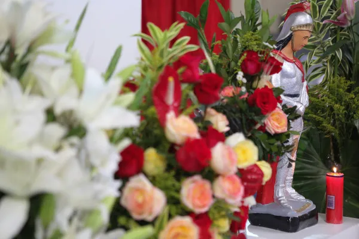
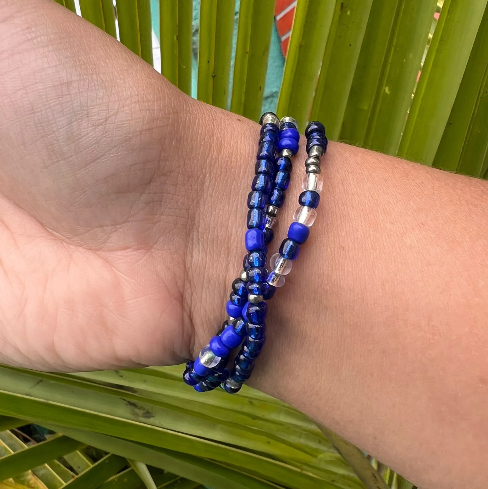
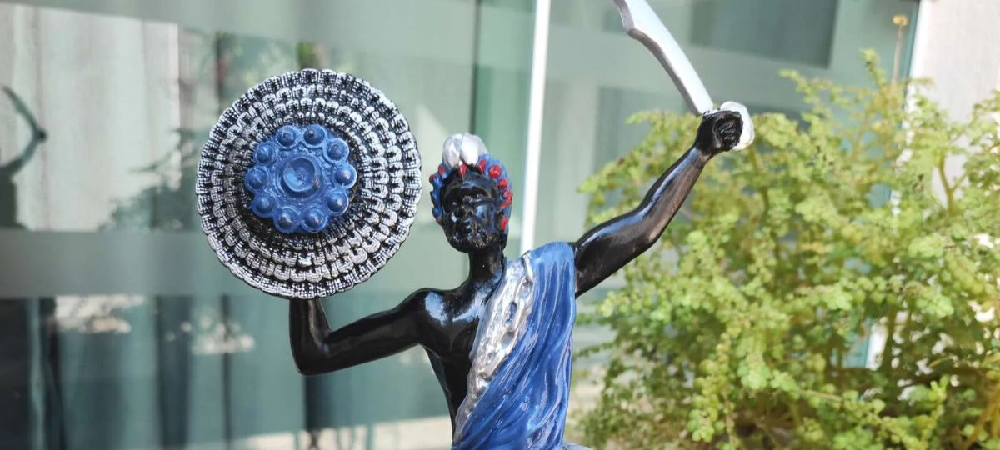

ORIXÁ DA GUERRA
Coragem, Senhor do ferro, Proteção e Valente.
" Tenho sete espadas pra me defender, tenho Ogum em minha companhia. "
Quem é Ogum?

Ogum é um dos Orixás mais queridos e respeitados na Umbanda. Ele é visto como um soldado protetor e o guardião das batalhas,
representando a força para lutar e vencer os desafios da vida. Sua personalidade é firme, justa e rigorosa ele existe para fazer
valer a justiça divina e não aceita curvas no caminho do que é certo. Onde quer que o mal apareça, Ogum age com firmeza para
colocar tudo em ordem. Na Umbanda, ele trabalha ao lado de Iansã na linha do Ar, sendo os dois os grandes protetores que trazem
o equilíbrio e o direcionamento para as pessoas. Ogum é o orixá que trabalha a favor da justiça, equilíbrio, proteção e
principalmente ataque quando é necessário aos seus filhos. Ogum é uma divindade de origem africana (orixá) cultuado em religiões
afro-brasileiras, como a umbanda e o candomblé. Ogum é o orixá guerreiro, conhecido pela sua coragem e força. Aliás, em iorubá,
grupo étnico-linguístico da África Ocidental, Ogum significa guerra.
Ogum é senhor da metalurgia, tendo domínio sobre o ferro e o aço e todas as ferramentas feitas com esses materiais, como a
lança, o martelo, a faca, a ferradura e a enxada. É um orixá associado à luta e também ao trabalho, patrono tanto dos militares
quanto dos trabalhadores braçais (sobretudo os ferreiros). A forma como Ogum é associado aos santos católicos muda dependendo da
região do Brasil. Nos estados do Rio de Janeiro, São Paulo e Rio Grande do Sul, ele é ligado a São Jorge. Jorge foi um militar
romano que nasceu na região da atual Turquia. Ele se converteu ao cristianismo e enfrentou o próprio imperador de Roma para
defender os cristãos que estavam sendo perseguidos. Por não abandonar sua fé, foi torturado e morto no dia 23 de abril do ano
303, data em que hoje se comemora o Dia de São Jorge. Existe também a famosa história de que Jorge, montado em seu cavalo branco,
salvou uma jovem ao derrotar um dragão com sua espada. Na verdade, esse dragão representa o mal e o egoísmo sendo vencidos pela
fé. Já na Bahia, Ogum é associado a Santo Antônio, conhecido como o santo dos milagres, que abriu mão de todas as suas riquezas
para se dedicar a Deus.
Nas histórias de origem africana, Ogum é um guerreiro valente, cheio de energia e de temperamento forte. Ele é filho de reis
e teve um papel fundamental na criação do mundo. No amor, viveu paixões marcantes com as divindades Oxum e Iansã. Na família,
Ogum é um filho dedicado e um irmão mais velho muito protetor para Exu e Oxóssi; inclusive, foi o próprio Ogum quem fabricou as
ferramentas e armas de caça de Oxóssi com suas próprias mãos. Por ter essa ligação forte com o trabalho e o dia a dia, Ogum é
considerado o Orixá mais próximo dos seres humanos depois de Exu. Como ele descobriu os segredos do ferro e da forja, criou as
ferramentas para a agricultura (como enxadas e arados) e as armas para a proteção (como facas e espadas). Por isso, ele é o grande
protetor dos caminhos, das estradas e aquele que nos ajuda a vencer qualquer dificuldade espiritual. Orixá conquistador, Ogum
fez-se respeitar em toda a África negra pelo seu carácter devastador. Foram muitos os reinos que se curvaram diante do poder
militar de Ogum.
Entre os muitos Estados conquistados por Ogun estava a cidade de Iré, da qual se tornou senhor após libertar a cidade da
tirania do rei e substituí-lo pelo seu, próprio filho, regressando glorioso com o título de Oníìré, ou seja, Rei de Iré.
Não é por acaso, portanto, que nas orações dedicadas a Ogun o medo fica tão evidente e a piedade é um pedido constante,
pois como diz uma das suas cantigas:
Ògún pá lélé pá
Ògún pá ojaré
Ògún pá, lélé pá
Ògún pá ojaré.
Ogum mata/extingui com violência
Ogum mata/extingui com razão
Ogum mata/extingui e destrói completamente.
Elementos ligados a Ogum;

Ogum é um dos Orixás mais queridos e respeitados no Brasil, contando com diversos fiéis que confiam cegamente em sua proteção.
Ele é visto como um soldado protetor e o guardião das batalhas, aquele que nos dá força e coragem para vencer os desafios do dia
a dia. Sua personalidade é descrita como firme, justa e rigorosa, pois ele existe para fazer valer a justiça divina e não aceita
desvios do caminho certo; onde o mal ou a desordem aparecem, ele age com rapidez para colocar tudo no lugar. Na Umbanda, ele
trabalha muito alinhado com o elemento Ar, que simboliza a aplicação da Lei Divina, pois o vento sopra espalhando a justiça e
limpando as impurezas do mundo. Já no Candomblé, sua força está profundamente ligada à terra e ao fogo da forja, elemento que ele
utiliza para moldar o ferro e transformar a realidade, mostrando que o Orixá usa a ação física, a tecnologia e o trabalho bruto
para criar caminhos seguros para a humanidade. Para saudar esse grande guerreiro, usa-se o brado "Ogunhê!", enquanto no Candomblé
é muito comum ouvir "Patakori Ogum!", que é uma saudação de respeito ao topo da cabeça do guerreiro, o grande líder. Os elementos
rituais de Ogum detalham muito bem o seu papel de defensor e desbravador. A espada é o seu símbolo máximo, representando o corte
de energias negativas, a defesa contra o mal, a coragem e a iniciativa para enfrentar os problemas de frente. No Candomblé, o
metal de Ogum é o ferro, e suas ferramentas sagradas (chamadas de asé ou ferramentas de Ogum) incluem não apenas a espada, mas
também a lança, o escudo, a faca, a bigorna, a ferradura e os instrumentos agrícolas que simbolizam o progresso, a agricultura e
a evolução da civilização. Outro elemento crucial e tipicamente do Candomblé é o Mariwô, que é a folha do dendezeiro desfiada.
O Mariwô possui uma função sagrada de proteção vegetal: ele é pendurado nas portas dos terreiros e nos ombros do Orixá para afastar
os espíritos mortos (eguns) e purificar o ambiente de todas as energias negativas.
Além disso, Ogum tem uma forte ligação com o reino vegetal por meio de suas folhas rituais (ewé). Na Umbanda, quando os
falangeiros de Ogum incorporam, costuma-se entregar a eles as folhas da planta popularmente conhecida como espada-de-são-jorge
ou lança-de-ogum, que possuem folhas rígidas e pontiagudas que imitam o metal. No Candomblé, as ervas fundamentais de Ogum
incluem a jarrinha, o dendezeiro, o pinhão-roxo, a guiné, a aroeira e o são-gonçalinho, usadas em banhos de abô, limpezas e
defumações para cortar o olho-gordo e trazer vitalidade. No reino mineral, sua energia se concentra na pedra Granada ou no
Quartzo Azul, cristais que funcionam como escudos protetores. Os alimentos oferecidos a ele, chamados de adimus, também carregam
essa energia de força. Enquanto na Umbanda é comum ver a oferta de cerveja branca cuja espuma representa a efervescência e a
comemoração da vitória , no Candomblé as comidas tradicionais são o Inhame Assado (com bastante azeite de dendê e palitos de
mariwô espetados) e a Feijoada, além do sacrifício ritual de animais como o galo e o bode em cerimônias internas. É sempre
importante ressaltar que as comidas, as cores e alguns fundamentos específicos dependem muito da nação do Candomblé (como Ketu,
Angola ou Jeje) e da forma como cada casa de axé atua.
Toda essa estrutura espiritual se conecta com o nosso cotidiano através dos caminhos, das estradas, das encruzilhadas em
formato de "T" e dos trilhos de trem, locais que Ogum domina e onde ele atua abrindo portas e trazendo movimento para vidas que
estão travadas. Suas cores de identificação também mudam conforme a tradição: o azul-escuro é muito presente na Umbanda,
trazendo a calmaria e o manto de proteção após as batalhas; já no Candomblé de nação Ketu, a cor principal é o azul-escuro
(frequentemente associado ao Alá de Ogum), enquanto nas nações de Angola e Jeje, o verde e o vermelho aparecem com força para
simbolizar a coragem do fogo da forja e a forte conexão com as matas e a caça. Essa imensa riqueza cultural gerou o sincretismo
religioso no Brasil, fazendo com que Ogum fosse associado a São Jorge nas regiões Sul e Sudeste, devido à lenda do cavaleiro que
derrota o dragão do egoísmo, e a Santo Antônio na Bahia, o santo militar e dos milagres que abriu mão de tudo para servir a Deus
com total fidelidade.
Itãs: Histórias Mitolôgicas de Ogum;

Na mitologia iorubá, conta-se que o deus supremo Olorum criou os orixás, e o primeiro deles, Oxalá, recebeu a missão de criar
o mundo e a humanidade. Nessa terra primordial, chamada Ilê-Ifé, os seres humanos e as divindades viviam lado a lado em total
harmonia. Com o passar do tempo, a população aumentou muito, gerando a necessidade urgente de desbravas novas áreas para o plantio
e para a sobrevivência. Diante da crise, os orixás se reuniram para decidir o que fazer; alguns deles até tentaram cortar a
vegetação densa e abrir espaço, mas falharam miseravelmente porque suas ferramentas eram feitas de materiais frágeis, como a
madeira e o osso. Foi nesse momento que Ogum entrou em ação. Empunhando um facão pesado, ele marchou em direção à floresta
fechada e, com golpes certeiros, limpou o terreno para a lavoura. Por esse motivo, Ogum ficou conhecido para sempre como o orixá
que abre os caminhos. Os demais deuses assistiram a tudo admirados, sobretudo pela eficácia e resistência do material usado por
ele: o ferro. Até então, ninguém conhecia o segredo da metalurgia, e Ogum era o único detentor desse mistério. Os orixás insistiram
para que ele revelasse o segredo daquele material, que se mostrava perfeito não apenas para a agricultura, mas também para a caça e
para a guerra. O guerreiro aceitou compartilhar o conhecimento da forja, mas com uma condição: que lhe fosse oferecido o reinado de
Ifé. Aceito o trato, Ogum tornou-se rei e ensinou a humanidade a dominar a siderurgia.
Certo dia, porém, o espírito desbravador de Ogum falou mais alto e ele saiu para uma longa temporada de caça, demorando muito
tempo para retornar. Quando finalmente regressou ao palácio, estava coberto de lama, suor e com as roupas totalmente rasgadas pela
mata, o que causou uma péssima impressão em seus súditos, que esperavam a postura impecável de um governante. Sentindo-se rejeitado
pelo povo que preferia as aparências ao trabalho duro, Ogum ficou profundamente ressentido, abdicou do trono e decidiu partir de Ifé,
levando consigo suas ferramentas. Ele viajou para um lugar distante chamado Irê, onde construiu sua casa e, após vencer batalhas
locais, foi coroado rei daquela cidade, passando a ser chamado de Ogum Onirê. Outro mito importante desse período conta que, após
sua partida, o mundo quase enfrentou a fome novamente quando seu irmão mais novo, Oxóssi, o grande caçador, desapareceu nas matas
profundas de Ossaim. Sem a caça de Oxóssi e sem o ferro de Ogum para a agricultura, a humanidade clamou por socorro. Demonstrando
seu amor fraterno e sua responsabilidade, Ogum vestiu sua armadura, forjou novas ferramentas e refez todos os caminhos do mundo até
encontrar seu irmão e restabelecer a fartura na terra.
Apesar de sua grandeza, o temperamento impetuoso de Ogum marcou seu final na terra em um último e trágico mito em Irê. Depois
de passar anos longe em uma de suas campanhas militares, Ogum retornou à sua cidade no dia em que o povo celebrava um festival
sagrado de silêncio e jejum, onde ninguém podia falar. Ao chegar sedento e faminto, Ogum fez perguntas aos moradores, mas todos
permaneceram calados por respeito ao rito. Sentindo-se ignorado e desafiado por seu próprio povo, o Orixá foi tomado por uma fúria
colérica cega: puxou sua espada e destruiu metade da cidade, matando inclusive aqueles que amava. Quando o festival acabou e o
silêncio foi quebrado, os sobreviventes explicaram que o voto de silêncio era, na verdade, uma homenagem à grandeza do próprio
Ogum. Arrasado pelo terrível peso do arrependimento e pela vergonha de seus atos impulsivos, o guerreiro cravou sua espada no
chão, a terra se abriu e ele sumiu para sempre, transformando-se em um Orixá definitivo.
A grande lição de moral da história de Ogum reside no equilíbrio entre a força e a razão. Ogum nos ensina que a tecnologia, o
trabalho e a determinação são as ferramentas fundamentais para transformar a realidade, vencer a estagnação e abrir caminhos onde
antes só existiam obstáculos intransponíveis. No entanto, o seu mito serve como um alerta severo sobre os perigos da ira, do
orgulho ferido e da impulsividade descontrolada. A mesma força destemida que constrói a civilização e protege os fracos pode,
num momento de fúria cega, destruir tudo o que foi edificado com esforço. Assim, a energia de Ogum nos convida a sermos guerreiros
de nossas próprias vidas, mas lembrando sempre que a verdadeira vitória exige que a nossa força física e mental seja governada
pela sabedoria, pela paciência e pela justiça.
Significado Espiritual de ser filho de Ogum;

Nas religiões de matrizes africanas as pessoas são guiadas por alguns orixás. O chamado Orixá de Cabeça é aquele pelo qual
as pessoas se denominam como filhos e, consequentemente, têm suas características na personalidade e até fisicamente. Os filhos
de Ogum geralmente possuem algumas destas características:
• Geralmente são pessoas que se irritam facilmente e têm opiniões muito fortes no que acreditam;
• São impulsivos;
• Geralmente são pessoas com físico forte;
• Consideram o esporte uma forma de lazer e até mesmo uma maneira de canalizar toda sua energia;
• São pessoas imediatistas e consideradas briguentas;
• São determinadas sobre o que querem e seguem fielmente os seus valores.
A necessidade espiritual de ser filho de Ogum está profundamente ligada à missão que o seu espírito trouxe para esta
encarnação, funcionando como um plano de aprendizado e evolução. Quando um espírito necessita da regência de Ogum, significa
que ele precisa desenvolver em sua jornada as virtudes da coragem, da iniciativa, da disciplina e da retidão. Geralmente,
são almas que escolheram passar por caminhos que exigem muita força de superação, ou que vieram com o compromisso de quebrar
demandas espirituais antigas, vencer perseguições de vidas passadas e abrir caminhos que antes pareciam completamente fechados
para a sua linhagem familiar. Ogum entra na vida desse filho como um escudo vivo e uma espada cortante, garantindo que, por
mais difíceis que sejam as batalhas ou os inimigos espirituais, ele sempre terá a energia necessária para resistir e vencer.
Essa ligação espiritual dita diretamente o temperamento e os desafios cotidianos do filho de Ogum. Espiritualmente, você
sente uma necessidade visceral de movimento, de independência e de justiça; a injustiça e a estagnação provocam uma revolta
interna que é, na verdade, o Orixá impulsionando você para a ação. No entanto, a maior necessidade espiritual de quem carrega
esse Axé é aprender a dominar a própria força. Como Ogum traz a energia do ferro e do fogo da forja, o filho corre o risco
constante de ser engolido pela impulsividade, pela teimosia, pela ansiedade e pela intolerância com os erros alheios. Portanto,
o seu maior dever espiritual não é apenas lutar contra o mundo exterior, mas travar uma batalha diária contra os seus
próprios excessos, transformando a agressividade em liderança e a pressa em estratégia.
Por fim, pertencer a Ogum exige uma postura de compromisso e lealdade com a espiritualidade. Ser filho deste Orixá significa
que os seus guias de trabalho como os seus Caboclos, Oguns de Ronda e Exus atuarão na "linha de frente" do terreiro, sendo os
soldados que limpam o ambiente, desfazem magias negativas e guardam os portões. A sua espiritualidade pede que você seja uma
pessoa de palavra, direta, que não se curve diante do medo e que use o seu trabalho e a sua energia para edificar e proteger, e
não para destruir. Encontrar-se sob a proteção de Ogum é entender que a sua vida espiritual será sempre de muito dinamismo e
superação, mas com a certeza absoluta de que você jamais caminhará desamparado, pois o dono das estradas estará sempre abrindo
as portas à sua frente, e também, um orixá que sempre irá guerrear por seus filhos como diz o ponto “ Tenho 7 espadas pra me
defender, eu tenho ogum em minha companhia, ogum é meu pai ogum é meu guia” um orixá que jamais abandona seus filhos.